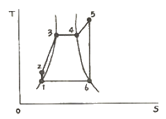
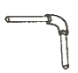
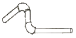
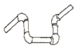
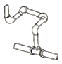
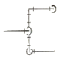
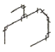
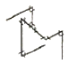
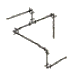
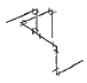

에너지관리기능장 (2008-03-30 기출문제)
1과목: 임의 구분
1. 다음은 보일러의 급수장치 중 급수 펌프의 구비조건을 열거한 것이다. 틀린 것은?
- 고온, 고압에 견딜 것
- 직렬운전에 지장이 없을 것
- 작동이 간단하고 취급이 용이할 것
- 저부하에서도 효율이 좋을 것
(정답률: 85%)

2. 보일러 연소실에서 발생한 연소가스가 굴뚝까지 이르는 통로는?
- 연돌
- 연도
- 화관
- 개자리
(정답률: 100%)
3. 보일러에서 공기예열기의 기능에 관한 설명 중 잘못된 것은?
- 연소가스의 일부를 활용하므로 열효율은 낮아진다.
- 공기를 예열시켜 공급하므로 불완전연소가 감소한다.
- 노내의 연소속도를 빠르게 할 수 있다.
- 저질 연료의 연소에 더욱 효과적이다.
(정답률: 80%)
4. 가열 전 물의 온도가 10℃인 온수보일러에서 가열 후 온도가 80℃라면 이 보일러의 온수 팽창량은 몇 ℓ 인가? (단, 이 온수보일러의 전체 보유수량은 400ℓ, 물의 팽창계수는 0.5×10-3/℃ 이다.)
- 10
- 12
- 14
- 16
(정답률: 50%)
5. 보일러의 보염장치 설치 목적을 설명한 것으로 틀린 것은?
- 연소용 공기의 흐름을 조절하여 준다.
- 확실한 착화가 되도록 한다.
- 연료의 분무를 확실하게 방지한다.
- 화염의 형상을 조절한다.
(정답률: 79%)
6. 열정산에서 출열 항목에 속하는 것은?
- 발생증기의 보유열
- 공기의 현열
- 연료의 현열
- 연료의 연소열
(정답률: 79%)
7. 난방부하 계산과 관련한 설명 중 틀린 것은?
- 난방부하는 난방면적에 열손실계수를 곱하여 산출한다.
- 방열기의 방열계수는 온수난방의 경우가 증기난방의 경우보다 크다.
- 온수난방은 방열기의 평균온도를 80℃로 기준하고, 표준방열량은 450 kcal/m2·h·℃ 이다.
- 증기난방은 방열기의 평균온도를 102℃로 기준하고, 표준방열량은 650 kcal/m2·h·℃ 이다.
(정답률: 78%)
8. 터보형 송풍기가 장착된 보일러에서 풍량조절 방법이 아닌 것은?
- 댐퍼의 조절에 의한 방법
- 회전수 변화에 의한 방법
- 송풍기 깃(vane)의 수량조절의 의한 방법
- 흡입베인의 개도에 의한 방법
(정답률: 90%)
9. 방열기는 창문 아래에 설치하는데 벽면으로부터 몇 mm 정도의 간격을 두어야 가장 적합한가?
- 10~20
- 30~40
- 50~60
- 70~90
(정답률: 83%)
10. 보일러 급수내관을 설치하였을 때의 이점과 관계 없는 것은?
- 급수가 일부 예열 된다.
- 관수의 순환이 교란되지 않는다.
- 전열면의 부동팽창을 촉진한다.
- 관수의 온도 분포가 고르게 된다.
(정답률: 82%)
11. 증기보일러의 용량을 표시하는 방법이 아닌 것은?
- 보일러의 마력
- 상당증발량
- 정격출력
- 연소효율
(정답률: 67%)
12. 천장이나 벽, 바닥 등에 코일을 매설하여 온수 등 열매체를 이용하여 복사열에 의한 실내를 난방하는 것은?
- 대류난방
- 패널난방
- 간접난방
- 전도난방
(정답률: 89%)
13. 다음 중 리프트 피팅에 대한 설명으로 잘못된 것은?
- 저압증기 환수관이 진공펌프와 흡입굽다 낮은 위치에 있을 때 설치한다.
- 급수펌프 가까이에서는 1개소만 설치한다.
- 1단의 흡상높이는 1.5m 이내로 한다.
- 환수주관보다 지름이 1~2mm 정도 큰 치수를 사용한다.
(정답률: 75%)
14. 공기 과잉계수를 나타낸 것으로 옳은 것은?
- 실제 사용공기량과 이론공기량과의 비
- 배기가스량과 사용공기량과의 비
- 이론공기량과 배기가스량과의 비
- 연소가스량과 이론공기량과의 비
(정답률: 90%)
15. 보일러 자동제어 요소의 동작 중 연속동작이 아닌 것은?
- 비례동작
- 2위치동작
- 적분동작
- 미분동작
(정답률: 85%)
16. 증기보일러의 안전밸브 2개 이상 설치하여야 하나, 전열면적이 몇 m2 이하인 경우에 1개 이상으로 할 수 있는가?
- 50
- 70
- 90
- 100
(정답률: 77%)
17. 수관식 보일러에서 그을음을 불어내는 장치인 슈트블로의 분무 매체로 사용되지 않는 것은?
- 기름
- 증기
- 물
- 공기
(정답률: 91%)
18. 매연의 발생 원인이 아닌 것은?
- 연소실 온도가 높을 경우
- 통풍력이 부족할 경우
- 연소실 용적이 적을 경우
- 연소 장치가 불량일 경우
(정답률: 75%)
19. 지역난방의 특징에 대한 설명 중 틀린 것은?
- 열효율이 좋고 연료비가 절감된다.
- 건물 내의 유효면적이 증대된다.
- 온수는 저온수를 사용한다.
- 대기 오염을 감소시킬 수 있다.
(정답률: 85%)
20. 연료의 연소시 연소온도를 높일 수 있는 조건이 아닌 것은?
- 발열량의 높은 연료를 사용할 경우
- 방사 열손실을 줄일 경우
- 연료나 공기를 가급적 예열시킬 경우
- 공기비를 높일 경우
(정답률: 69%)
2과목: 임의 구분
21. 전양식 안전밸브를 사용하는 증기보일러에서 분출압력이 15kgf/cm2, 밸브시트 구멍의 지름이 50mm일 때 분출용량은 약 몇 kgf/h 인가?
- 12985
- 12920
- 12013
- 11525
(정답률: 65%)
22. 다음 중 노통이 2개이 보일러는?
- 코니시 보일러
- 랭커셔 보일러
- 케와니 보일러
- 색셔널 보일러
(정답률: 86%)
23. 배기가스분석 방법에서 수동식 가스분석계 중 화학적가스 분석 방법에 해당 되지 않는 것은?
- 오르자트 법
- 헴펠 법
- 검지관 법
- 세라믹 법
(정답률: 64%)
24. 다음 중 보일러 동 내부에 점식을 일으키는 주요인은?
- 급수 중의 탄산칼슘
- 급수 중의 인산칼슘
- 급수 중에 포함딘 용존산소
- 급수 중의 황산칼슘
(정답률: 79%)
25. 보일러 매연 발생의 원인이 아닌 것은?
- 불순물 혼입
- 연소실 과열
- 통풍력 부족
- 점화조작 불량
(정답률: 74%)
26. 보일러에서 팽출이 발생하기 쉬운 곳은?
- 노통
- 연소실
- 관판
- 수관
(정답률: 80%)
27. 청관제의 사용 목적이 아닌 것은?
- 보일러의 pH 조정
- 보일러수의 탈산소
- 관수의 연화
- 보일러 수위를 일정하게 유지
(정답률: 88%)
28. 원통보일러의 보일러수 25℃에서 pH값으로 가장 적합한 것은?
- 6.2~6.9
- 7.3~7.8
- 9.4~9.7
- 11.0~11.8
(정답률: 62%)
29. 열관류율의 단위로 옳은 것은?
- kcal/kg·h
- kcal/kg·℃
- kcal/m·℃·h
- kcal/m2·℃·h
(정답률: 82%)
30. 오르자트 가스분석기로 직접 분석할 수 없는 성분은?
- O2
- CO
- CO2
- N2
(정답률: 83%)
31. 유체속에 잠겨진 경사면에 작용하는 힘은?
- 경사진 각도에만 관계된다.
- 유체의 비중량과 단면적의 곱과 같다.
- 잠겨진 깊이와는 무관하다.
- 면의 중심점에서의 압력과 면적과의 곱과 같다.
(정답률: 62%)
32. 직경 20cm 인 원관 속을 속도 7.3m/s로 유체가 흐를 때 유량은 약 m3/s 인가?
- 0.23
- 13.76
- 229
- 760
(정답률: 72%)
33. 보일러 강판의 가성취화에 대한 설명으로 잘못된 것은?
- 관체의 평면부에서 가장 많이 발생한다.
- 반드시 수면 이하에서 발생한다.
- 관공 등의 응력이 집중하는 곳에 발생한다.
- 리벳과 리벳 사이에 발생 되기 쉽다.
(정답률: 59%)
34. 보일러 산세정 후 중화 방청처리하는 경우 사용하는 약품이 아닌 것은?
- 히드라진
- 인산소다.
- 탄산소다
- 인산칼슘
(정답률: 70%)
35. 보일러의 분출사고시 긴급조치사항으로 잘못 설명된 것은?
- 보일러 부근에 있는 사람들을 우선 안전한 곳으로 긴급히 대피시킨다.
- 연도 댐퍼를 전개한다.
- 압입통풍기를 정지시킨다.
- 다른 보일러와 증기관이 연결되어 있을 경우 증기밸브를 연다.
(정답률: 83%)
36. 다음 중 표준 대기압에 해당 되지 않는 것은?
- 760 mmHg
- 101325 N/m2
- 10.3323 mAq
- 12.7 psi
(정답률: 89%)
37. 레이놀즈수(Reynolds number)의 물리적 의미를 나타내는 식으로 옳은 것은?
- 유속/음속
- 관성력/점성력
- 관성력/중력
- 관성력/표면장력
(정답률: 71%)
38. 20℃의 물 5kg을 1기압, 100℃의 건조포화증기로 만들 때 필요한 열량은 몇 kcal 인가? (단, 1기압에서 물의 증발잠열은 539 kcal/kg 이다.)
- 2695
- 3095
- 4120
- 5390
(정답률: 38%)
39. 다음 랭킨사이클 T-S선도에서 단열 팽창의 과정은?

- 1-2
- 2-3-4
- 5-6
- 6-4
(정답률: 81%)
40. 증기 선도에서 임계점이란?
- 고체, 액체, 기체가 불평형을 유지하는 점이다.
- 증발열이 어느 압력이 달하면 0 이 되는 점이다.
- 증기와 액체가 평형으로 존재할 수 없는 상태의 점이다.
- 건포화증기를 계속 가열하면 압력 변동 없이 온도만 상승하는 점이다.
(정답률: 86%)
3과목: 임의 구분
41. 에너지이용합리화법상의 특정열사용기자재가 아닌 것은?
- 강철제 보일러
- 난방기기
- 2종압력용기
- 온수보일러
(정답률: 71%)
42. 에너지이용합리화법상 에너지의 최저소비효율기준에 미달하는 효율관리기자재의 생산 또는 판매금지 명령을 위반한 자에 대한 벌칙은?
- 1년 이하의 징역 또는 1천만원 이하의 벌금
- 1천만원 이하의 벌금
- 2년 이하의 징역 또는 2천만원 이하의 벌금
- 2천만원 이하의 벌금
(정답률: 48%)
43. 동력용 나사절삭기의 종류에 들지 않는 것은?
- 오스타식
- 호브식
- 다이헤드식
- 로터리식
(정답률: 67%)
44. 증기난방 배관의 설명이다. 옳지 않은 것은?
- 단관 중력 환수식은 방열기 밸브를 반드시 방열기의 아래쪽 태핑에 단다.
- 진공 환수식은 응축수를 방열기보다 위쪽의 환수관으로 배출할 수 있다.
- 기계 환수식은 각 방열기 마다 공기빼기 밸브를 설치할 필요가 없다.
- 습식 환수식은 주관은 보일러 수면보다 높은 곳에 배관한다.
(정답률: 59%)
45. 압력 배관용 탄소강관의 KS 기호는?
- SPPs
- STPW
- SPW
- SPP
(정답률: 79%)
46. 피복금속 아크용접에서 교류용접과 비교한 직류 용접기의 장점이 아닌 것은?
- 극성의 변화가 쉽다.
- 전격 위험이 적다.
- 역률이 양호하다.
- 자기 쏠림이 적다.
(정답률: 80%)
47. 다음 배관 중 스위블형 신축이음이라고 볼 수 없는 것은?




(정답률: 89%)
48. 아래에 주어진 평면도를 등각투상도로 나타낼 때 맞는 것은?





(정답률: 85%)
49. 다음 중 증기트랩의 구비조건 설명으로 틀린 것은?
- 유체의 마찰저항이 클 것
- 내식성과 내구성이 있을 것
- 공기빼기가 양호할 것
- 봉수가 확실할 것
(정답률: 90%)
50. 관지지 장치 중 배관의 열팽창에 의한 배관의 이동을 구속 또는 제한하는 장치는?
- 행거
- 서포트
- 레스트레인트
- 브레이스
(정답률: 74%)
51. 에너지이용합리화법상 “목표에너지원단위”란 무엇을 뜻하는가?
- 건축물의 단위면적당 에너지사용 목표량
- 제품 생산목표량
- 연료단위당 제품 생산목표량
- 목표량에 맞는 에너지 사용량
(정답률: 64%)
52. 탄산마그네슘 보온재에 관한 설명 중 잘못된 것은?
- 200~250℃에서 열분해를 일으킨다.
- 열전도율이 작다.
- 습기가 많은 옥외 배관에 알맞다.
- 탄산마그네슘 85%에 석면 10~15%를 첨가한 것이다.
(정답률: 72%)
53. 알루미늄 도료에 관한 설명이다. 잘못된 것은?
- 400~500℃의 내열성을 지니고 있어 난방용 방열기 등의 외면에 도장한다.
- 알루미늄 도막은 금속 광택이 있고 열을 잘 반사한다.
- 은분이라고도 하며 방청효과가 크고 습기가 통하기 어렵기 때문에 내구성이 풍부한 도막이 형성된다.
- 알루미늄 분말에 아마인유와 혼합하여 만든다.
(정답률: 77%)
54. 다음 중 18% Cr – 8% Ni 의 스테인리스강에 해당하는 것은?
- 페라이트계 스테인리스강
- 오스테나이트계 스테인리스강
- 마텐자이트계 스테인리스강
- 석출경화형 스테인리스강
(정답률: 83%)
55. 로트로부터 시료를 샘플링해서 조사하고, 그 결과를 로트의 판정기준과 대조하여 그 로트의 합격, 불합격을 판정하는 검사를 무엇이라 하는가?
- 샘플링검사
- 전수검사
- 공정검사
- 품질검사
(정답률: 90%)
56. 모든 작업을 기본동작으로 분해하고, 각 기본 동작에 대하여 성질과 조건에 따라 미리 정해 놓은 시간치를 적용하여 정미시간을 산정하는 방법은?
- PTS법
- WS법
- 스톱워치법
- 실적자료법
(정답률: 85%)
57. 다음 중 데이터를 그 내용이나 원인 등 분류 항목별로 나누어 크기의 순서대로 나열하여 나타낸 그림을 무엇이라 하는가?
- 히스토그램(histogram)
- 파레토도(pareto diagram)
- 특성요인도(causes and effects diagram)
- 체크시트(check sheet)
(정답률: 54%)
58. 일정 통제를 할 때 1일당 그 작업을 단축하는데 소요되는 비용의 증가를 의미하는 것은?
- 비용구배(Cost slope)
- 정상소요시간(Normal duration time)
- 비용견적(Cost estimation)
- 총비용(Total cost)
(정답률: 82%)
59. c관리도에서 k=20 인 군의 총부적합(결점)수 합계는 58이었다. 이 관리도의 UCL, LCL을 구하면 약 얼마인가?
- UCL = 6.92, LCL = 0
- UCL = 4.90, LCL = 고려하지 않음
- UCL = 6.92, LCL = 고려하지 않음
- UCL = 8.01, LCL = 고려하지 않음
(정답률: 59%)
60. 일반적으로 품질코스트 가운데 가장 큰 비율을 차지하는 코스트는?
- 평가코스트
- 실패코스트
- 예방코스트
- 검사코스트
(정답률: 86%)
"직렬운전에 지장이 없을 것"은 올바른 조건입니다. 보일러의 급수장치에서는 급수 펌프가 직렬운전 방식으로 작동합니다. 이는 펌프가 물을 흡입하여 보일러로 공급하는 과정에서, 물의 압력이 감소하면서 펌프의 효율이 떨어지는 현상을 방지하기 위한 것입니다. 따라서 직렬운전 방식은 보일러의 안정적인 운전을 위해 필수적인 조건입니다.